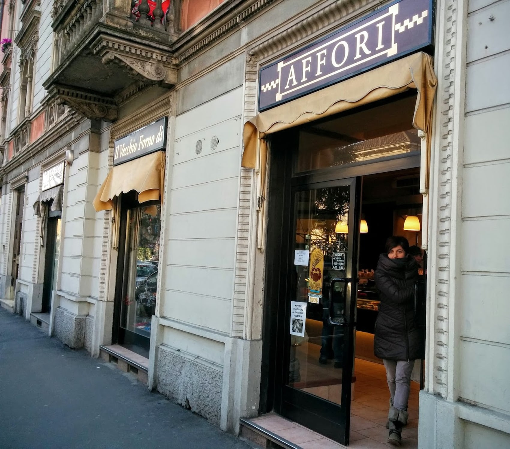
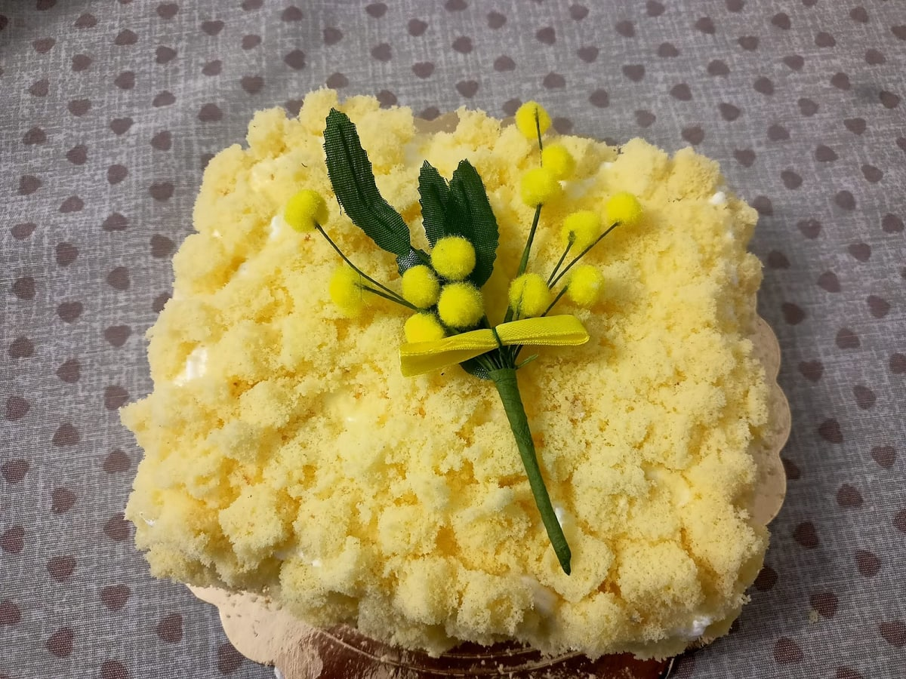
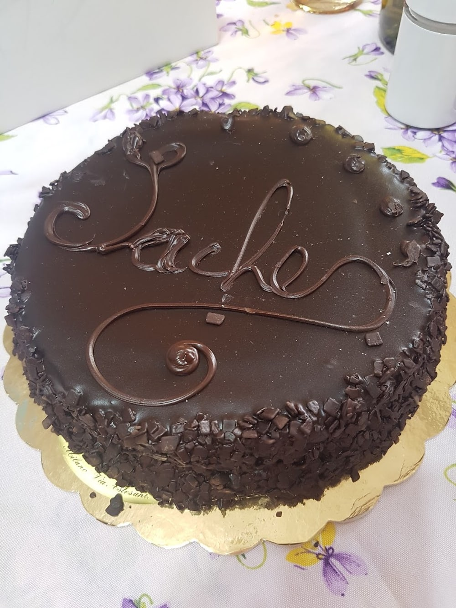
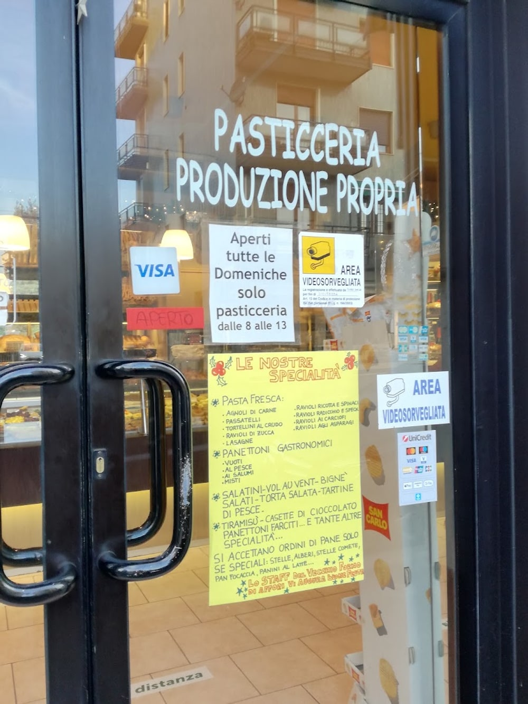

Sulla facciata il nome sta su due insegne, una per lato dello spigolo. Si legge camminando.
«Era il mio panificio da bambina e da ragazza. […] Sono ritornata dopo anni ed ho ritrovato la medesima qualità. È rimasta identica.»
Celeste, recensione Google
Il pane
Buono anche
il giorno dopo.
È il dettaglio che ricorre nelle recensioni, e non è un modo di dire: il pane comprato la mattina, il giorno dopo è ancora quello. Chi lo scrive lo confronta con quello di vent'anni prima.
In banco c'è pane per tutti i gusti — comune, integrale, multicereali — insieme a focacce e pizze. In vetrina è comparso anche il pane nero al carbone vegetale.

Pasticceria
Produzione propria.
C'è scritto sul vetro.
Non è una formula: è dipinto sulla porta d'ingresso. Le torte si fanno qui e si ordinano al banco.


Sono le due che compaiono per prime sulla loro scheda, ma la vetrina cambia con le stagioni e con le occasioni.
Sulle torte su ordinazione vale la pena un aneddoto vero: una cliente ha telefonato chiedendo una torta per quindici persone per il giorno stesso, e gliel'hanno fatta.
Per una torta con una scritta o una decorazione precisa, meglio qualche giorno di anticipo. Ma vale sempre la pena chiedere.

Sotto Natale
Il cartello
si allunga.
Nelle settimane delle feste in vetrina compare un foglio giallo scritto a pennarello, e la lista diventa lunga: panettoni farciti, panettoni gastronomici, salatini e vol-au-vent, tiramisù, casette di cioccolato.
Del panettone artigianale da un chilo una cliente scrive che era «veramente buonissimo, gustoso e non troppo dolce».
E una riga del cartello dice tutto sul mestiere: si accettano ordini di pane solo se speciali — stelle, alberi, stelle comete, pan focaccia, panini al latte.
Foto del loro cartello fotografato in negozio: la lista delle feste va riconfermata ogni anno.
Recensioni Google
4,5 su 67.
«Era il mio panificio da bambina e da ragazza. I prodotti migliori di Affori… Dalle focacce, al pane profumato, che il giorno dopo era ancora buonissimo. Sono ritornata dopo anni ed ho ritrovato la medesima qualità.»
Celeste, Local Guide
«Questo negozio è un vero paradiso del pane e dei dolci! Quando entri vieni accolta da commesse gentilissime e con il sorriso. Soprattutto Sara è sempre molto dolce, gentile e disponibile a qualsiasi richiesta.»
Cherry Flyning
«Senza alcun dubbio, la migliore panetteria di Affori. Pane per tutti i gusti, anche con farina integrale o multicereali. Dolci di qualità e per ogni occasione, prodotti da forno buoni e genuini.»
Nicola Barreca
«Ho chiamato ieri per chiedere una torta per 15 persone per il giorno stesso e malgrado il poco preavviso sono riusciti ad accontentarmi creando una torta bellissima e che è piaciuta a tutti! Grazie mille davvero!»
Chiara Ferri
«Abbiamo preso per Natale un panettone artigianale da chilo veramente buonissimo, gustoso e non troppo dolce. Personale carinissimo e disponibile.»
Yle Mura
«Che meravigliosa scoperta questa pasticceria di Affori!»
Deb P.
Da fuori
Le due insegne.
Le foto pubbliche sono poche e nessuna mostra il banco: queste sono quelle verificate. Il forno merita un servizio fotografico.
Dove siamo
Via Astesani 15,
Affori.
Via Alessandro Astesani 1520161 Milano
- lunedì6:30–13:30 · 16:30–19:30
- martedì6:30–13:30 · 16:30–19:30
- mercoledì6:30–13:30 · 16:30–19:30
- giovedì6:30–13:30 · 16:30–19:30
- venerdì6:30–13:30 · 16:30–19:30
- sabato6:30–13:30, solo mattina
- domenicachiuso
Asporto · pagamento con carta
Chiama il fornoLa mappa è di Google: aprendola, Google riceve il tuo indirizzo IP e può usare i suoi cookie.
Domande
A che ora aprite?
Dal lunedì al venerdì 6:30–13:30 e 16:30–19:30. Il sabato solo la mattina, 6:30–13:30. La domenica siamo chiusi.
Si possono ordinare le torte?
Sì, la pasticceria è di produzione propria. Meglio telefonare con qualche giorno di anticipo, anche se è capitato di preparare una torta per quindici persone nella stessa giornata.
Che pane fate?
Pane comune e pane per tutti i gusti, compresi integrale e multicereali, oltre a focacce e pizze. In vetrina è comparso anche il pane nero al carbone vegetale.
Fate i panettoni?
Sotto Natale sì: panettone artigianale da un chilo, panettoni farciti e panettoni gastronomici. Per quelli conviene prenotare.
Dove siete esattamente?
Via Alessandro Astesani 15, ad Affori. L'insegna è divisa su due pannelli attorno allo spigolo del palazzo: da un lato «Il Vecchio Forno di», dall'altro «Affori».